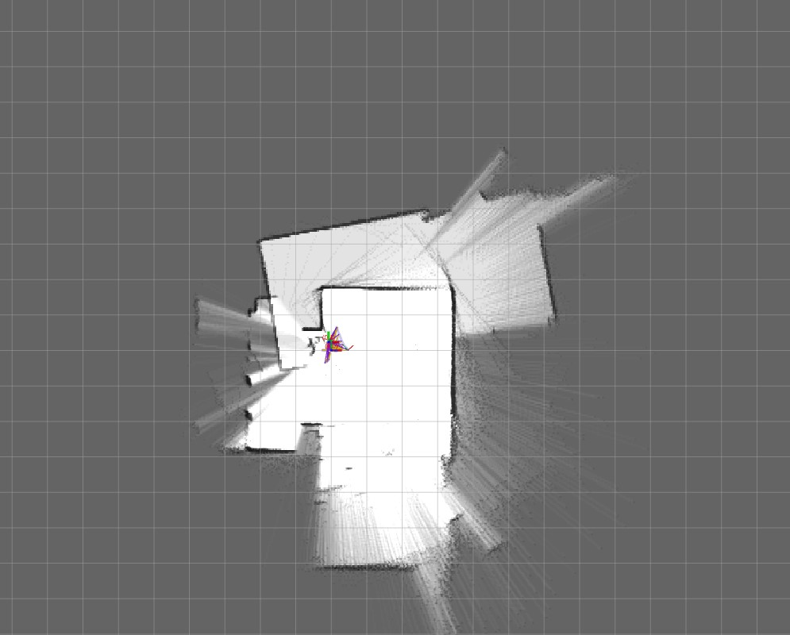

Duration
January 2022 - April 2022
Location
IUT de Cachan
Description
This project implements a real-time 2D mapping system using LIDAR (Light Detection and Ranging) technology, designed to create an accurate representation of its surroundings by measuring distances and angles to nearby objects. Built on the LPC1768 microcontroller platform, the system offers real-time data processing, 2D visualization on a Graphic LCD screen, high-speed UART communication for rapid data transfer, and efficient data handling through algorithms for filtering, angle and distance calculations, and averaging. The system utilizes an LPC1768 microcontroller, a Graphic LCD for visualization, and a LIDAR sensor capable of 360-degree scanning.
It can process 400 data points per scan, has an effective mapping range of up to 6 meters, and displays results with a 5-degree angular resolution. This versatile system has numerous applications, including robotics for autonomous navigation, smart home mapping for automation and security, industrial automation for factory floor mapping and AGVs, security systems for area monitoring, and educational purposes for demonstrating LIDAR technology principles. The modular design allows for future enhancements such as integration with advanced mapping algorithms, 3D mapping capabilities, wireless data transmission, and machine learning integration for object recognition. Whether for technical applications requiring environmental awareness or educational demonstrations, this LIDAR-based 2D mapping system offers a powerful and flexible solution for real-time spatial mapping and analysis.